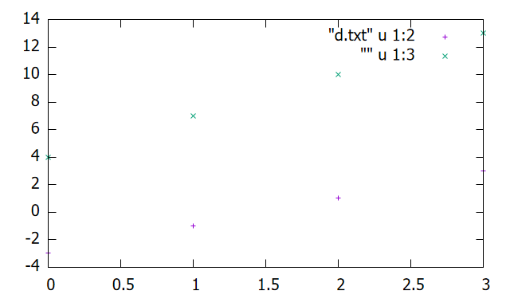
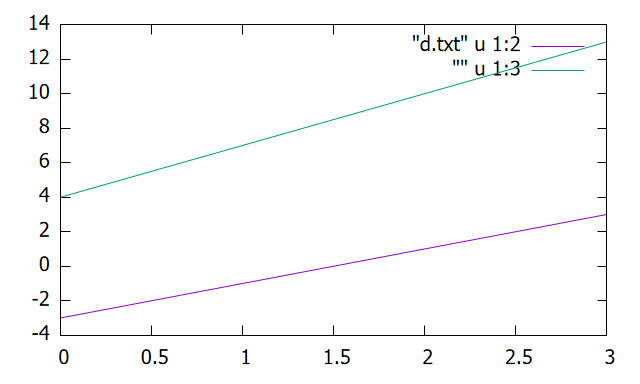

1-4. データを読み込む
このセクションでは、あらかじめ用意されたデータのプロットについて紹介する。
データを読み込む準備
まずはデータの形式を確認すべきである。Gnuplotでは、区切り文字のデフォルトは半角スペースに 設定されている。そのため、例えばコンマ区切りCSVファイルを読み込もうとしても失敗する。 区切り文字が半角スペース以外(コンマなど)の場合、
set datafile separator sepまた、Gnuplotではデータファイルの文字コードがUTF-8であることを仮定している。それ以外の文字コードである場合 正常に読み込めないので、データファイルの文字コードを確認すること。
データファイルは2次元データである必要があり、例えば：
0,-3,4
1,-1,7
2,1,10
3,3,13plotコマンド
plotコマンドは関数や数式だけではなく、CSVデータなどのデータファイルも指定できる：
plot path u xcol:ycolpathはGnuplotのカレントディレクトリを基準とした相対パスで、ここで指定したデータファイルの 第xcol列目をx軸、第ycol列をy軸として、通常すべての行のデータ点をプロットする。 例えば同階層に存在する「data.csv」というファイルの \(1\) 列目をx軸、 \(3\) 列目をy軸として読み込みたい場合は
plot "data.csv" u 1:3※カレントディレクトリは通常、インタラクティブモードであればコンソールと同じ、バッチモードで あれば.gpファイルの場所と同じである。
また、
plot data1 u xcol1:ycol1, data2 u xcol2:ycol2plot data1 u xcol1:ycol1, "" u xcol2:ycol2例えば上に示したデータ(data.csvとする)を
set datafile separator ","
plot "data.csv" u 1:2, "" u 1:3
このようになる。なお、オプションで"w l"を指定すると隣り合うデータ点どうしを線分で結んで折れ線グラフにすることもできる：
set datafile separator ","
plot "data.csv" u 1:2 w l, "" u 1:3 w l
- 2次元データを読み込む際、区切り文字と文字コードを確認する必要がある。
- plotコマンドにより、2次元データの指定した2列の関係をプロットできる。
- オプション"w l"により折れ線グラフにすることができる。